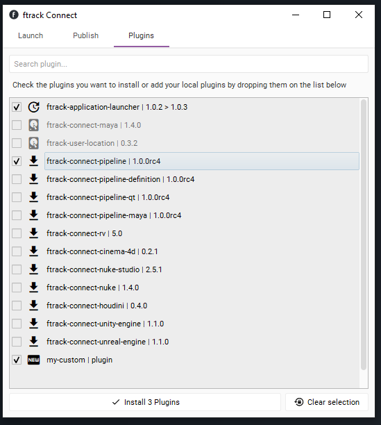
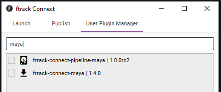
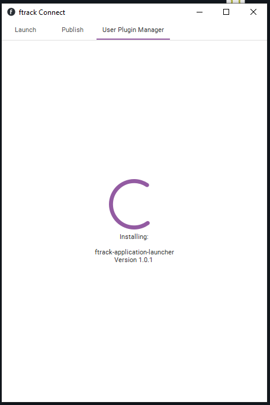
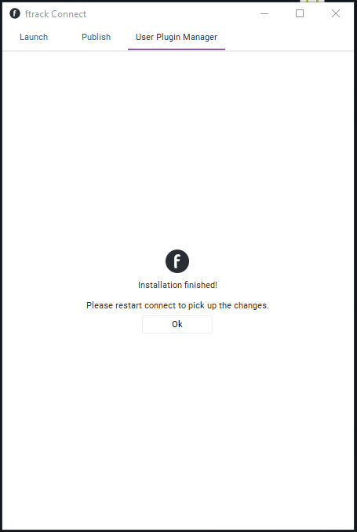

About¶
This plugin provide a ConnectWidget made to visually manage your integrations, which can be used to install and update them from local as well as remote sources.
Note
The User Plugin Manager widget will manipulate ONLY locally installed to the user. Will not discover, look or manage centrally installed plugins.
Start Up¶
When Connect startup it’ll check for the integrations available locally as well as remote, and present with various options. Plugins which can be updated, will be automatically be checked.
{kind=link}
Filtering¶
The widget allows to simply filter all the available integrations to quickly search for the one needed.
{kind=link}
Installation¶
When your list of plugin is checked, all you’ll be in need of doing is to press the apply button and the installation process will begin.
Plugins (as zip) can also be installed through drag and drop in the widget.
The progress will show what plugins is installing.
{kind=link}
Once the list of plugin to install is processed, users will be prompted with a message to restart connect.
{kind=link}
Warning
ftrack Connect requires to be restarted after plugins have been installed.
Customizations¶
Currently the remote list of plugins is contained in a json encoded file hosted on ftrack S3 bucket This path can be overwritten using the environment variable FTRACK_CONNECT_JSON_PLUGINS_URL, which will have to point to a json containing the full path to where your integrations and plugins are hosted.
The content of the json will have to contain a key named integrations which will host the full paths.
{
"integrations":[
"https://s3-eu-west-1.amazonaws.com/ftrack-deployment/ftrack-connect/plugins/ftrack-application-launcher-1.0.1.zip",
"etc...."
]
}